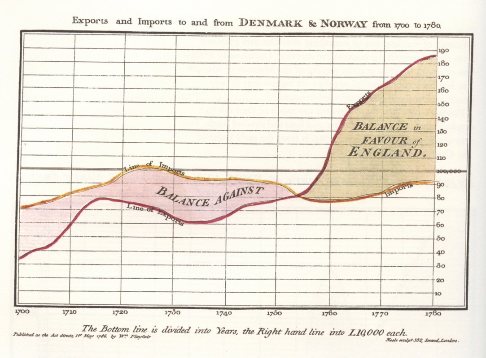
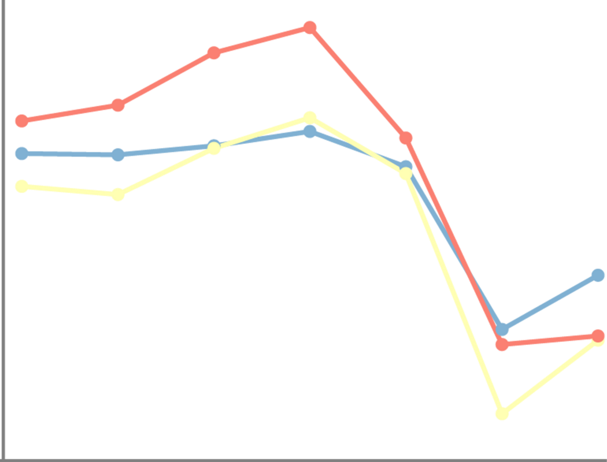
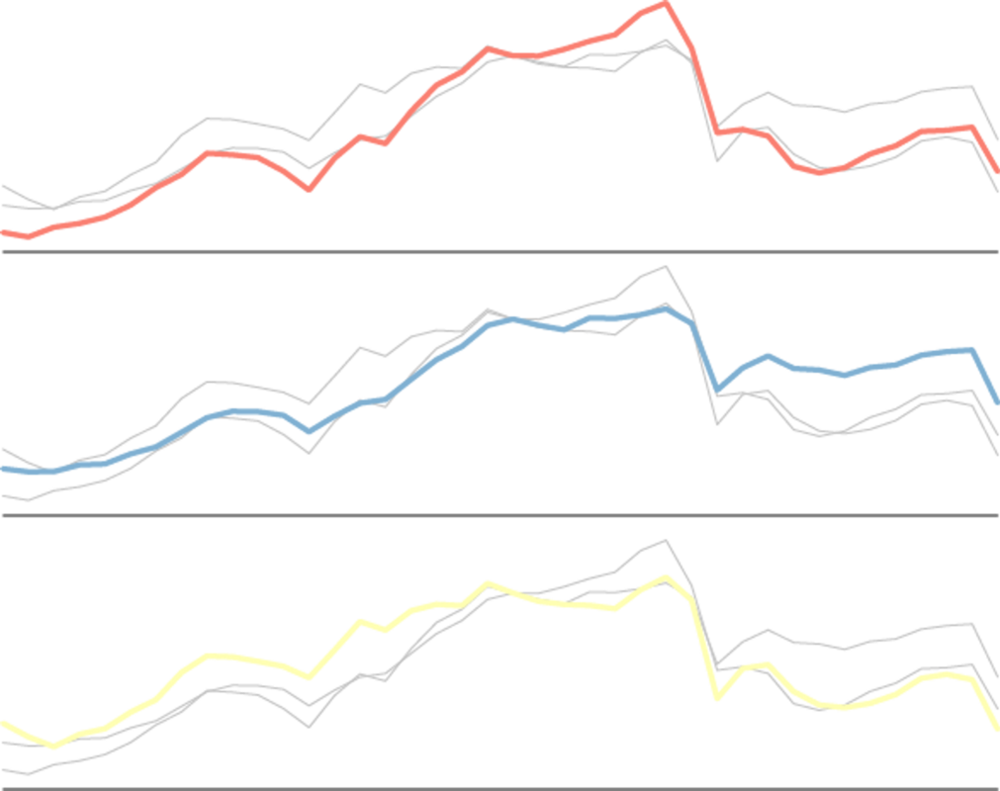

Historique
Les diagrammes à lignes, également appelés graphiques linéaires ou graphiques en courbes, ont une longue histoire qui remonte au moins au XVIIIe siècle.
L'un des premiers exemples de graphiques linéaires est attribué au mathématicien et astronome suisse Johann Heinrich Lambert. Dans son ouvrage "Observationes in ordines naturales plantarum", publié en 1768, Lambert a utilisé des lignes pour représenter les variations du climat dans différentes régions.
Les diagrammes à lignes sont devenus plus courants dans le domaine de la statistique et de la représentation graphique des données. Le statisticien britannique William Playfair est souvent crédité de l'invention des premiers graphiques à lignes modernes. Dans ses ouvrages, notamment "The Commercial and Political Atlas" (1786), il a utilisé des lignes pour représenter les variations des prix, des importations et des exportations.
Diagramme à lignes de William Playfair

- Timeline de l’histoire de la dataviz
Pourquoi des diagrammes à lignes
La principale raison de les utiliser
- Les diagrammes à lignes conviennent pour illustrer un phénomène qui évolue dans le temps (ou une autre variable).
- Les courbes permettent de comparer facilement plusieurs séries de données sur le même graphique, ce qui permet de repérer les différences et les similitudes entre les variables.
- Ils sont faciles à créer et à comprendre. Ce sont des diagrammes très utilisés.
La principale raison de ne pas l’utiliser
- Les diagrammes à lignes représentent une simplification des données, en reliant les points par des lignes droites ou courbes lisses. Cela peut entraîner une perte de détails et masquer certaines variations brèves ou spécifiques.
- Le nombre de lignes représentées sur le diagramme ne doit pas être trop élevé, sous peine de devenir illisible.
- Les variations de l'échelle utilisée sur les axes peuvent altérer la perception des tendances. Une modification de l'échelle peut donner l'impression de changements plus importants ou moins importants qu'ils ne le sont réellement.
Le diagramme à lignes et ses variantes
Lignes brisées (diagramme linéaire)

Avantages
- Le diagramme à lignes brisées permet de visualiser les tendances et les variations d'une variable en fonction d'une autre variable de manière plus précise qu'un simple diagramme en courbe.
Inconvénients
- L'utilisation de segments de ligne brisée peut rendre le graphique plus complexe visuellement, surtout lorsque plusieurs variables sont représentées. Cela peut rendre plus difficile la compréhension rapide du graphique.
Lignes lissées

Avantages
- Le lissage des lignes facilite la visualisation des tendances.
Inconvénients
- Suivant le type de lissage appliqué, les tendances peuvent être trompeuses.
Multiples petits de diagrammes à lignes

Avantages
- Le diagramme est reproduit autant de fois qu’il y a de lignes à représenter et sur chaque diagramme une des lignes est mise en évidence, ce qui facilite les comparaisons.
Inconvénients
- La mise en œuvre est plus longue.
Lignes pleines empilées

Avantages
- les graphiques à lignes pleines empilées sont souvent utilisés pour afficher l'évolution dans le temps d'un total et de ses parties.
Inconvénients
- En l’absence d’indication, il est difficile de faire la différence entre des lignes pleines empilées et des lignes pleines superposées.
- La lecture de la forme de la courbe supérieure nous indique comment le total évolue, mais hormis la forme de la courbe en position la plus basse (en bleu), l’évolution des autres formes au-dessus (jaunes et rouges) ne peut pas être facilement appréhendée. Une alternative “multiples petits” éviterait ces inconvénients, mais la forme du total disparait.

Lignes en échelons

Avantages
- C’est un diagramme dans lequel les points sont reliés par des segments de ligne horizontaux et verticaux, ressemblant à des marches d'escalier. Ils sont utilisés pour des variables entières ou lorsqu'il est nécessaire de mettre en évidence l'irrégularité des changements ; par exemple, lorsque des changements de taux d'imposition ou de taux d'intérêt sont visualisés. Trois types de ruptures peuvent être représentés.

Inconvénients
- La lisibilité est affectée quand plusieurs lignes sont représentées sur le même diagramme
Diagramme en pentes (Slopegraph)
.png)
Avantages
- Un diagramme en pentes permet visualiser la tendance d’une variation entre une date t et t+1 par entité. La lecture est rapide et intuitive.
Inconvénients
- Limitation à deux intervalles de temps dans sa forme simple
Recommandations
Les données
- Les graphiques à lignes permettent de voir l’évolution de valeurs numériques en fonction du temps ou d’une autre variable.
Recommandation 1
- Représenter les valeurs à l’aide de points ou d’autres symboles sauf si le nombre de valeurs est trop élevé pour pouvoir les distinguer.
Testez par vous même
Recommandation 2
- L’échelle des ordonnées peut ne pas démarrer à zéro pour mieux représenter les écarts entre les courbes à condition de bien l’indiquer et de ne pas trop dilater.
- Attention, des échelles dilatées ou inversement rétrécies peuvent être trompeuses.
Testez par vous même
Recommandation 3
- Ne pas superposer trop de lignes surtout lorsqu’elles s’enchevêtrent. Typiquement trois courbes au maximum sinon privilégier de petits multiples.
Recommandation 4
- Légendes aux extrémités des lignes ou à proximité des courbes.
Recommandation 5
- Ne jamais utiliser les doubles axes. Les graphiques à deux axes sont dénués de sens. Utilisez plutôt deux graphiques.
Testez par vous même
Recommandation 6
- Ne pas utiliser d’effet 3D qui n’apporte aucun bénéfice.
Outils
Sélection d’outils
Nous vous proposons des diagrammes, des variantes et des lignes directrices, mais peut-on les mettre en œuvre concrètement avec les outils graphiques ?
La liste des logiciels de visualisation de données est longue et en faire une analyse exhaustive serait fastidieuse et peu pratique à utiliser. Nous avons choisi quelques outils connus, facile d’accès pour des débutants et qui permettent d’exporter les graphiques dans un format vectoriel .svg (sauf pour l’outil Tableau Software).
Dans ce format, les diagrammes se composent d’un ensemble d’objets graphique (polygones, lignes, cercles et textes) qu’il est possible d’importer dans des outils de présentation tels que PowerPoint, Draw ou des outils vectoriels dédiés comme Illustrator ou son équivalent libre Inkscape. Il est alors possible de faire manuellement des modifications qui ne sont pas ou difficilement réalisables avec l’outil de dataviz.
Exemples
- Les exemples qui sont proposés présentent des réalisations basiques. Pensez à sélectionner l’onglet correspondant au diagramme à lignes.
Exemple Excel
En savoir +
- Tous les types de diagrammes à secteurs sont réalisables (n’hésitez pas à regarder des tutoriels pour les construire si besoin).
- Pour transférer un graphique au format .svg, sélectionnez le graphique dans l’onglet puis faire un copier-coller vers l’outil de dessins vectoriels ou de présentation.
GOOGLE SHEET (on line)
En savoir +
- Tous les types de diagrammes à secteurs sont réalisables (n’hésitez pas à regarder des tutoriels pour les construire si besoin).
- Pour transférer un graphique au format .svg, sélectionnez le graphique dans l’onglet puis en haut à droite du graphique, cliquez sur l’icone puis télécharger au format .svg.

TABLEAU SOFTWARE
Le site Tableau public propose de nombreux exemples de réalisation de diagrammes à lignes téléchargeables
En savoir +
- L’outil Tableau ne propose pas d’exportation au format .svg mais au format .pdf. Dans ce format, avec les outils vectoriels, l’extraction des formes du graphique reste possible mais pas très pratique.

CALC OpenOffice
En savoir +
- Tous les types de diagrammes à secteurs sont réalisables (n’hésitez pas à regarder des tutoriels pour les construire si besoin).
- Pour transférer un graphique au format .svg, sélectionnez le graphique dans l’onglet puis faire un copier-coller vers l’outil de dessins vectoriels ou de présentation.

RAWgraph (on line)
En savoir +
- Cet outil en ligne simple ne permet pas de réaliser tous les types de diagrammes à secteurs.
- Sa simplicité d’utilisation et sa fonction d’exportation au format .svg le place comme une possible alternative à des outils plus complexes comme les tableurs.
Les langages de programmation
Sachez enfin, qu’avec les librairies graphiques associées aux langages de programmation R, Python ou JavaScript, il est possible de réaliser tous les diagrammes et les recommandations.
Liens vers le code de graphiques basiques :
JavaScript Observablehq (1)
R (R Graph Gallery)(2),
Python (Python Graph Gallery)(2),
JavaScript d3.js (d3.js Graph Gallery)(2) .
(1) Notebooks observablehq de l’association TDV
(2) Site de Yan Holtz (en anglais) et
Le site The Data Visualization Catalogue propose aussi des exemples réalisés avec de multiples outils ou langages de programmation (en anglais).